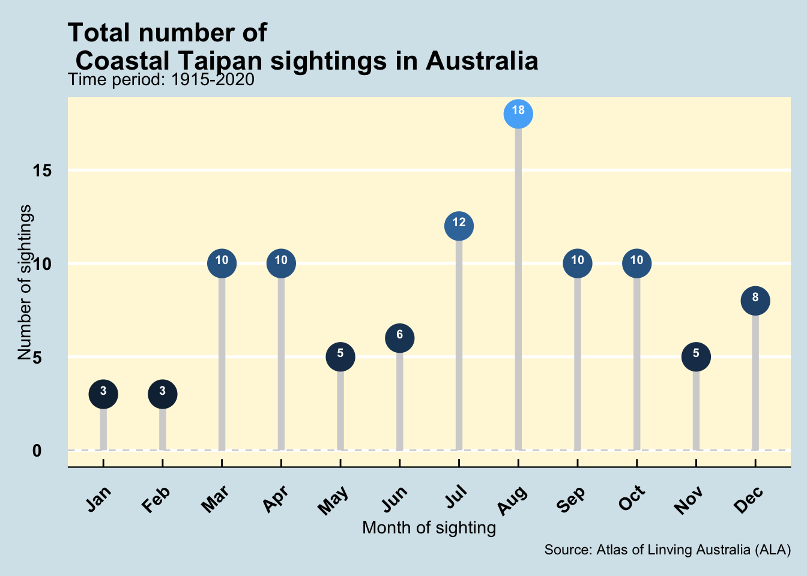

taipan %>% head() %>% DT::datatable()The Enigmatic Coastal Taipan: Australia‚Äôs Deadly Serpent üêç
Motivation
By exploring the current data and performing a detailed analysis, researchers and enthusiasts can gain insights into the behavior, distribution, and occurrence patterns of the Coastal Taipans in Australia, which can be useful for a range of ecological, environmental, and conservation studies.
1 Introduction
The Taipan class of reptiles are indigenous to the land mass of Australia as well as Papua New Guinea, and are considered to be one of the deadliest snakes on the planet. The Taipan, scientifically known as the Oxyuranus genus, comprises several species, with the Coastal Taipan (Oxyuranus scutellatus) and the Inland Taipan (Oxyuranus microlepidotus) being the most renowned. These reptiles are highly venomous and belong to the elapid family, which includes other infamous snakes like the king cobra and the black mamba. According to Markwell and Cushing (2016), what sets the taipan apart, however, is its reputation as having the most toxic venom of any snake in the world !
In our current analysis, we will be focusing on the occurrences of a specific subspecies of the Coastal Taipan across the various states of Australia. The subgroup of the Coastal Taipans which has been scientifically named as Oxyuranus Scutellatus Scutellatus, is commonly found in the northern regions of Australia and is renowned for its agility and speed. It primarily feeds on small mammals, birds, and occasionally reptiles, using its potent venom to immobilize its prey swiftly.

Characterized by its slender body, shiny scales, and formidable fangs, the Taipan is a formidable predator. Despite its fearsome reputation, these snakes are generally reclusive and rarely encountered by humans. They prefer to inhabit coastal regions, woodlands, and savannas, blending seamlessly into their natural surroundings as can be observed in Figure 1.
While the Coastal Taipans are not classified as endangered species, however, with rapid human activities such as urbanisation and encroachment of wildlife area for agricultural purposes, the habitat of these reptiles have been increasingly affected as a result of which, steps have been taken by wild life conservationists to preserve their natural habitats to the best extent possible.
1.1 Data source:
The data was sourced from the Atlas of Living Australia (ALA) using the
galahR package.The weather station data to study impact of weather conditions on sightings was sourced from National Climatic Data Centre (NCDC) using
rnoaapackage in R.
Key assumptions
Based on the literature surveys for the Coastal Taipan, here are our assumptions while moving forward with our analysis:
- Based on the information from the Australia Museum, the Coastal Taipans are active throughout the year but are observed to be most commonly encountered during late winter to spring (August to December of a calendar year).
- As can be inferred from its colloquial name, the Coastal Taipans are often observed in the coastal regions of Australia.
- Based on a study by Billabong Sanctuary, the Coastal Taipans are not endangered and have probably increased in numbers due to the growth in the number of rats (who are the primary prey) in areas close to the human settlements.
- Coastal Taipans depend primarily on their venom as their defensive mechanism and consider human interactions as an act of aggression. Consequently, the number of sightings across Australia can be considered to be limited to certain regions and in small numbers.
- The Coastal Taipans, like any other snakes are territorial in nature and do not migrate from their region over the years.
Although we will attempt to accurately analyse the data by obtaining it from reliable repositories, however, it is important to consider the limitations of the dataset while making critical conclusions based on the data in hand. Some of the limitations of the current dataset are delineated as follows:
Limitations of the data
Since the data which has been obtained from the Atlast of Living Australia falls under the category of observational data, there could be instances of missing values. These instances will need to be filtered out while analysing the data from the repository.
Since the data is obtained from various sources, there could be inconsistencies in reporting the data.
While the data collection was done in an extensive and granular manner, there could be a lack of precision of the observations made for the exact latitude and longitude.
The dataset obtained from the Atlas of Living Australia only reports for all the Coastal Taipans that have been sighted and recorded. Hence, it does not report the entire population of these reptiles across the various regions of Australia. This may lead to inaccurate conclusions post analysis of the limited data in hand.
The dataset here consist of observational data and in particular, occurrences data. Some of the limitations that are prevalent in such datasets are as follows :
- The data here is obtained from various sources. As a result, there may be non-uniformity in the data provided. Each reporting authority may have their own interpretations of the data they may have provided.
- The current dataset obtained is a subset of an observational data. These types of data are often plagued with lack of randomisation during the selection of data. This may lead to biases in the dataset such as selection and systematic bias.
- The data maybe misclassified or filled in non-uniform units by the various sources, leading to lack of accuracy of the overall dataset.
2 Data description
2.1 Description of the Variables in the Dataset
The dataset contains data on observations of the Coastal Taipans (Oxyuranus scutellatus scutellatus) in Australia. The dataset has been organized into a tidy format. Below is a detailed description of each salient variable:
| Variable Name | Data Type | Description |
|---|---|---|
| decimalLatitude | dbl | The latitude coordinate of the observation location. |
| decimalLongitude | dbl | The longitude coordinate of the observation location. |
| eventDate | date | The date when the observation was made. |
| scientificName | chr | The scientific name of the observed species. In this dataset, it’s Oxyuranus scutellatus scutellatus. |
| taxonConceptID | chr | A unique URL that provides information about the taxonomic concept for the species. |
| recordID | chr | A unique identifier for each observation record. |
| dataResourceName | chr | The name of the data resource/provider. |
| occurrenceStatus | chr | The status of the observation, indicating if the species is present or absent at the location. |
| eventRemarks | chr | Special remarks related to the event sighting. |
| eventTime | datetime | Time of the event sighting. |
| eventID | chr | A unique ID for each event observation. |
| samplingEffort | chr | An variable to indicate the sampling technique used. |
| samplingProtocol | chr | A remark for the type of sighting. |
3 Initial data analysis
3.1 Data Source
Data Source: The data was sourced from the Atlas of Living Australia (ALA) using the galah R package.
The weather station data to study impact of weather conditions on sightings was sourced from National Climatic Data Centre (NCDC) using rnoaa package in R.
3.2 Data Cleaning
Data Cleaning Steps:
- The datatype for
eventDatehas been changed to datetime for accurate temporal analysis.
- Observations with missing event dates, longitude, or latitude were filtered out.
- Redundant variables were dropped from the dataset to keep only the salient variables important for the current analysis.
Methods to Check and Clean Data:
- Validity Checks and outlier analysis: Ensure that the latitude and longitude values are within valid ranges. For latitude (-90 to 90) and for longitude (-180 to 180). This would help detect any unusual or erroneous data points.
- Consistency Checks: Make sure there aren’t any discrepancies in the way data is represented across rows.
- Missing Value Analysis: Any missing values should be analyzed to understand the reason behind them.
- Date Consistency: Ensure that the event dates fall within expected ranges and are formatted correctly.
3.3 Data Quality Check
vis_miss(taipan)The vis_miss() function from the “visdat” package provides a visual representation of missing data in the dataset.
The plot illustrated in Figure 2 indicates that about half of the total dataset has missing values. These missing values can be observed majorly in the variables of eventRemarks,eventTime and eventID. In order to improve the quality of the overall data, we will consider either transforming these variables or removing them as a part of feature selection in the following sections.
lat_summary <- taipan$decimalLatitude %>% fivenum()
long_summary <- taipan$decimalLongitude %>% fivenum()
summary_table <- tibble(
Statistic = c("Minimum", "1st Quartile", "Median", "3rd Quartile", "Maximum"),
Latitude = lat_summary,
Longitude = long_summary
)
kable(summary_table, format = "html", table.attr = "class='table'") %>%
kable_styling(full_width = FALSE, bootstrap_options = c("striped", "hover"), position = "center") %>%
column_spec(1, border_right = TRUE) %>% # Add a line between columns
row_spec(0, bold = TRUE, color = "white", background = "lightblue")| Statistic | Latitude | Longitude |
|---|---|---|
| Minimum | -28.16667 | 131.1667 |
| 1st Quartile | -25.74854 | 145.2500 |
| Median | -17.93333 | 145.9833 |
| 3rd Quartile | -15.46667 | 152.2000 |
| Maximum | -10.88333 | 154.4333 |
The fivenum() function in R provides a summary of five-number statistics: the minimum, lower-hinge (25th percentile or first quartile), median (50th percentile), upper-hinge (75th percentile or third quartile), and the maximum.
By analyzing these statistics in Table 1, we can get an overview of the distribution of latitudes and longitudes in the dataset. The five number summary of the latitude and longitude values further allows us to validate the values with each latitude and longitude observation being within the maximum and minimum possible limits.
3.4 Data transformation and feature selection
As we are primarily interested in analysing the wild sightings of the Coastal Taipans across Australia, hence, we will filter out the data obtained from museums and animal sanctuaries. This information has been provided in the event ID column which will be used to filter the required data as shown in the code chunk below. It has been additionally assumed that the occurrences with no mention of the term “museum” have been considered as wild sightings in the context of the current study.
taipan <- taipan %>% mutate(occurrence = if_else(str_detect(taipan$eventID,"museum"),"Museum","Wild"))
taipan$occurrence <- replace_na(taipan$occurrence,"Wild")
taipan_occurrs <- taipan %>% group_by(occurrence) %>% summarise(Count = n())
ggplot(taipan_occurrs, aes(x = occurrence,y = Count)) +
geom_col(aes(fill = occurrence)) +
labs(title = "Distribution of Coastal Taipan sightings",
x = "Occurrence Type",
y = "Number of sightings") +
theme_classic() +
theme(legend.position = "none") + geom_label(aes(label =Count))
Figure Figure 3 displays the distribution of Taipan sightings categorized into two types: Museum and Wild. It’s evident from the figure that a portion of the data is sourced from museums, which means these observations don’t represent the natural behavior or occurrence of Taipans in their wild habitats.
For a comprehensive study of the natural behavior or occurrence patterns of Taipans, it’s pertinent to focus solely on the “Wild” type data.
# Selecting only wild occurrences of Coastal Taipans
taipan_wild <- taipan %>% filter(occurrence =="Wild")We have observed a total of 240 occurrences across Australia. However, this number has been obtained from the raw data which will need to be cleaned further.
Based on the initial data analysis, we will need to perform the following data cleaning operations:
- Filter the data with valid sighting date for detailed temporal analysis.
- Filter the data with valid values of longitude and latitude for detailed spatial analysis.
taipan_wild <- taipan_wild %>%
rename(Longitude = decimalLongitude,
Latitude = decimalLatitude) %>%
mutate(eventDate = as.Date(eventDate)) %>%
filter(!is.na(eventDate)) %>%
filter(!is.na(Longitude)) %>%
filter(!is.na(Latitude)) %>% select(-c("samplingEffort","samplingProtocol","taxonConceptID","recordID","dataResourceName"))
save(taipan_wild, file=here::here("data/taipan.rda"))‚ĺÔ∏èüí° Upon performing the required data cleaning operation, we have a total of 100 wild sightings of Coastal Taipans across Australia. üí°‚ÄºÔ∏è
3.4.1 Combining data of sightings with weather data ⛈️
In order to explore the prevailing weather conditions during the sighting, we will need to merge the datasets from two different sources. Here, we will utilise the weather data reported from the various weather stations in Australia by utilising the RNOAA package which is maintained by the National Oceanic and Atmospheric Administration (NOAA). The following code chunk allows us to obtain the weather conditions, namely precipitation (PRCP), maximum temperature (TMAX) and minimum temperature (TMIN). In order to utilise data from active weather stations, we have filtered those data whose last reported conditions were relayed after the year of 2020.
aus_stations <- ghcnd_stations() |>
filter(str_starts(id, "ASN")) |>
filter(last_year >= 2020) |>
mutate(wmo_id = as.numeric(wmo_id),
name = str_to_lower(name)) |>
select(-state, -gsn_flag) |>
filter(element %in% c("PRCP", "TMAX", "TMIN")) |>
nest(element: last_year) |>
rowwise() |>
filter(nrow(data) == 3) |>
select(-data) Once we have obtained the weather data, we need to merge the sighting data with the weather conditions. For this purpose, we can utilise the geographical data (latitude and longitude) to merge the closest weather station data with the location of the Coastal Taipan sighting.
‼️ Since it is difficult to exactly match the latitude and longitude of the sighting to the weather station, hence, we will convert the geographical data into spatial objects and then utilise the nearest feature function to merge the weather conditions of the location of the sighting to the closest weather reporting station. This has been done in the following code chunk. ‼️
# Convert the datasets into spatial objects
taipan_sf <- st_as_sf(taipan_wild, coords = c("Longitude", "Latitude"), crs = 4326)
aus_stations_sf <- st_as_sf(aus_stations, coords = c("longitude", "latitude"), crs = 4326)
# Perform the nearest neighbor join
nearest_stations <- st_nearest_feature(taipan_sf, aus_stations_sf)
# Combine the datasets
combined_data <- cbind(taipan_wild, aus_stations[nearest_stations, ])
combined_data <- as.data.frame(combined_data)
unique_id <- unique(combined_data$id)Once we have successfully mapped the sighting data with each of the weather stations, let us try to observe the most frequent sightings with respect to its closest weather station.
combined_count <- combined_data %>% group_by(name) %>% summarise(Count = n())
top_2 <- c("cooktown airport","townsville aero")
ggplot(combined_count,aes(x = reorder(name,Count),y = Count)) + geom_col() + coord_flip() + theme_classic() + ggtitle("Number of Coastal Taipan sightings \n for each weather station") + geom_col(data = ~filter(.x, name %in% top_2),fill = "darkred") + geom_label(data = ~filter(.x, name %in% top_2),aes(label = Count),vjust=0.8) + labs(x = "Weather station name",y = "Number of Coastal Taipan sightings",caption = "Source: National Climatic Data Center and Atlas of Living Australia")
Figure 4 illustrates the number of Coastal Taipan sightings for each of the weather stations in Australia. Based on the illustration, we will be able to narrow down our search for the location with frequent sightings of the reptile and can drill down our analysis to obtain weather information.
Here, we observe that the weather stations Cooktown Airport and Townsville Aero have significantly higher number of sightings when compared to the rest of the data. Let us pull the weather information for these weather stations through the below code chunk.
narrogin <- aus_stations |>
filter(name %in% top_2) |>
rowwise() |>
mutate(ts = list(meteo_pull_monitors(
monitors = id, var = c("PRCP", "TMAX", "TMIN"),
date_min = "1950-01-01",
date_max = "2023-09-13") |>
select(-id))) |>
rename(Latitude = latitude, Longitude = longitude, elev = elevation) |> select(id, Longitude, Latitude, elev, name, wmo_id, ts) %>%
unnest(ts) |>
mutate(tmax = tmax/10, tmin = tmin/ 10)In the next part, we will create a new variable called sighting with values of either 0 or 1 to mark the sighting of the Coastal Taipan. This variable is important because,
the weather data obtained is for all the possible dates which match our time period filter. This does not necessarily mean that a Coastal Taipan was observed on that particular day. Hence, upon merging the weather and the sighting dataset, it is important to distinguish the days (obtained by eventDate) which mark the sighting of a Coastal Taipan. We will be primarily interested to analyse the prevailing weather conditions on these particular days for the choice of our weather stations.
subset_combined_data <- combined_data %>% filter(name %in% top_2)
taipan_weather <- right_join(subset_combined_data,narrogin,by = c("id","eventDate"="date"))
taipan_weather <- taipan_weather %>% mutate(sighting = if_else(!is.na(occurrenceStatus) ,1,0))
save(taipan_weather, file=here::here("data/taipan_weather_sighting.rda"))4 Exploratory data analysis
4.1 When are the Coastal Taipans most likely to be observed ?
taipan_grouped <- taipan_wild %>% group_by(month(eventDate,label=TRUE)) %>% summarise(sightings = n())
taipan_grouped <- taipan_grouped %>% rename("month" = `month(eventDate, label = TRUE)`)
ggdotchart(taipan_grouped, y = "sightings",
x = "month",
color = "sightings",
add = "segments",
add.params = list(color = "lightgray", size = 2),
dot.size = 8,
rotate=FALSE,
label = "sightings",
group = "month",
font.label = list(color = "white", size = 8,
vjust = 0, face = 'bold'),
ggtheme = theme_economist()
) + theme(legend.position = "none",panel.background = element_rect(fill = 'cornsilk'),axis.text = element_text(face = "bold"),axis.text.x = element_text(angle=45,vjust = 1)) +
geom_hline(yintercept = 0, linetype = 2, color = "lightgray") + labs(y = "Number of sightings",
x= "Month of sighting",
caption = "Source: Atlas of Linving Australia (ALA)",subtitle = "Time period: 1915-2020") + ggtitle("Total number of \n Coastal Taipan sightings in Australia") 
üí° Figure 5 illustrates the number of Coastal Taipans reported till date for each month. We can observe that the sightings are higher between the months of July to December when compared to the rest of the year. This can be a result of the prevailing monsoon conditions in Australia which closely corroborates with our assumption stated in Section 1.
Some of the reasons why the Coastal Taipans are observed to be more active are as follows:
- Breeding season: The Coastal Taipans are highly active during the breeding season which closely conincides with the monsoon season in Australia.
- Increased prey availability: The monsoon season in northern Australia typically brings heavy rainfall, which can lead to flooding in some areas. This flooding forces small mammals, reptiles, and other prey animals out of their burrows and hiding places, making them more accessible to Coastal Taipans. The increased prey availability during the monsoon can lead to an uptick in snake activity as they take advantage of the abundance of food.
- Temperature and humidity: Reptiles are ectothermic in nature, meaning their body temperature is highly influenced by the environmental temperature. Monsoon season generally brings about warm and humid conditions. These conditions additionally improve the metabolism and mobility in reptiles which allows for higher activity and increased number of Coastal Taipan sightings.
- Migratory behaviour: Due to increased mobility in the reptiles during the monsoon season, some Coastal Taipans exhibit migrate behaviour for better conditions and availability of prey. Migrations can often lead to human interactions and hence, their consequent sightings.
üí°
4.2 Where are the Coastal Taipans most commonly observed in Australia?
# Assuming your dataset is named `sightings` and has columns `latitude` and `longitude`
leaflet(data = taipan) %>%
addTiles() %>%
addCircles(lng = ~decimalLongitude, lat = ~decimalLatitude, popup = paste("Scientific name:",taipan$scientificName, "<br>",
"Latitude:",taipan$decimalLatitude,"<br>",
"Longitude:",taipan$decimalLongitude,"<br>"), radius = 50, color = "red")sourceSightings <- taipan %>%
group_by(dataResourceName) %>%
summarise(count = n())
colnames(sourceSightings) <- c("Data Source", "Number of Sightings")
kable(sourceSightings, format = "html", table.attr = "class='table'") %>%
kable_styling(full_width = FALSE, bootstrap_options = c("striped", "hover"), position = "center") %>%
column_spec(1, border_right = TRUE) %>% # Add a line between columns
row_spec(0, bold = TRUE, color = "white", background = "lightblue")| Data Source | Number of Sightings |
|---|---|
| ALA species sightings and OzAtlas | 1 |
| Australian Museum provider for OZCAM | 2 |
| Queensland Museum provider for OZCAM | 236 |
| iNaturalist Australia | 1 |
Figure 6 illustrates that, in alignment with its name, most Coastal Taipan sightings occur in coastal regions. Additionally, considering that a significant portion of the data comes from the “Queensland Museum provider for OZCAM” as observed by Table 2, it can be determined that a majority of these sightings are concentrated in the coastal areas of Queensland. It is also particularly interesting to note that one sighting observed in the Northern Territory indicating a possibility of migration and future possibilities of higher sightings in this region.
üí°üí° The Coastal Taipan‚Äôs preference for coastal regions in Australia can be attributed to the habitat, climate, and prey availability in these areas. Coastal regions provide a favorable environment with adequate warmth, humidity, and shelter. These conditions are conducive for the Taipan‚Äôs survival and reproduction. Additionally, coastal areas offer a rich biodiversity, ensuring ample prey for the snake. The vegetation in these regions, like grasslands and woodlands, offers suitable hiding spots for the snake and its prey, leading to a higher likelihood of the Taipan being found in these areas.
4.3 Has there been a rise in the number of Coastal Taipans in Australia over the years?
population_count <- taipan_wild %>%
mutate(year = year(eventDate)) %>%
group_by(year) %>%
filter(year != "1915") %>%
summarise(count = n())
trend <- ggplot(population_count, aes(x = year, y = count)) +
geom_line(aes(color = "Yearly Count"), linewidth = 1) +
geom_smooth(aes(color = "Trend Line"), method = "loess", se = FALSE, size = 1.5,linetype = 'dashed') +
labs(title = "Trend of Coastal Taipan Sightings Over the Years",
x = "Year",
y = "Number of Sightings",
color = "Legend") +
theme_classic()
ggplotly(trend)Figure 7 demonstrates a noticeable increase in sightings over the years, potentially suggesting a growth in the Coastal Taipan population, indicating they might not be “endangered”. However, there are caveats to consider.
Caveats
Sightings vs. Population: The number of sightings does not necessarily equate to the actual population. An increase in sightings could be due to increased human activity in the taipan’s habitat or better reporting mechanisms.
Incomplete Data: The dataset might not cover all sightings, especially as it has limited data sources or regions.
External Factors: Factors like urban development, habitat destruction, or climate change can influence the habitats and distribution of species, which can subsequently influence sighting reports.
4.4 Are the Coastal Taipans limited to certain regions of Australia ?
In Section 4.2, we were able to observe that the Coastal Taipans are observed to be sighted close to the coasts. In this section, we will be focused on assessing whether the sighting locations of the Coastal Taipans suggest that these reptiles are limited to certain regions of Australia only. The same will be assessed through the generation of a null plot and testing a hypothesis. The hypothesis and the null generating mechanism are as follows:
\(H_o\) : Coastal Taipans are not limited to a single region and can be sighted all over Australia.
\(H_1\) : Coastal Taipans are limited to certain regions of Australia, particularly in humid and warm conditions.
Null generating mechanism: Usage of the “null_permute” function to permute the latitude values of the Coastal Taipan sightings.
set.seed(1232536)
australia_map <- map_data("world", region = "Australia")
# Overlay the soccer pitch as a custom annotation on the scatter plot
map_null_plot <- ggplot() + geom_polygon(data = australia_map, aes(x = long, y = lat, group = group), fill = "white", color = "black") +
geom_point(data = lineup(null_permute("Latitude"),taipan_wild, n = 20),
aes(x = Longitude,y = Latitude),color = "red",alpha = 0.4) + facet_wrap(~.sample) + theme_classic() + theme(
legend.position = "none",
axis.title = element_blank(),
axis.text = element_blank())
map_null_plot
Key takeaway
Upon analysing the plot null lineup plots in Figure 8, we observed that of the 8 test cases, 7 people were able to recognise the plot 4 as the most unique plot due to the scatter points (sighting locations) being limited to only the coastal regions of Australia. The P-value for the following result is 5.9765626^{-9} which suggests that the null hypothesis can be rejected and we can conclude that there is significant evidence in the data to suggest that Coastal Taipans are majorly limited to the North-Eastern coast of Australia.
4.5 Has the geographical distribution of Coastal Taipans remained consistent over the years?
Snakes are typically reclusive and territorial. Given this characteristic, it’s intriguing to consider whether coastal taipans exhibit similar behavior. Specifically, it’s of interest to determine if coastal taipans remain in their established habitats due to their inherent nature or external factors or if there are distinct regions they consistently inhabit. This investigation will be facilitated by generating a null plot and conducting hypothesis testing. The pertinent hypotheses and the mechanism for generating the null distribution are outlined as follows:
\(H_o\): The geographical distribution of Coastal Taipan sightings has remained consistent over the years, with no significant difference in distribution between the periods pre-2000s and post-2000s.
\(H_1\): The geographical distribution of Coastal Taipan sightings has changed between the periods pre-2000s and post-2000s.
Null generating mechanism: Usage of the “null_permute” function to permute the eventCategory (Pre or Post 2000s categorisation) values of the Coastal Taipan sightings.
taipan_wild <- taipan_wild %>%
mutate(eventCategory = ifelse(year(eventDate) < 2000, "pre-2000s", "post-2000s"))
set.seed(201349)
ggplot(lineup(null_permute('eventCategory'), taipan_wild), aes(x = Longitude, y= Latitude, color = eventCategory), n=20) +
borders("world", regions = "Australia", fill = "white", colour = "black") +
geom_point(alpha = 0.5) +
facet_wrap(~ .sample, nrow = 2) +
theme_classic() +
theme(legend.position = "none",
axis.title.x = element_blank(),
axis.title.y = element_blank(),
axis.text = element_blank())
Key takeaway
Upon analysing the plot null lineup plots in Figure 9, we observed that of the 8 test cases, only 2 people were able to recognise the plot 19 as the most unique plot due to the scatter points being limited to only the coastal regions of Australia. The P-value for the following result is 0.0572447 which suggests that the null hypothesis cannot be rejected based on 95% confidence and we can conclude that there is significant evidence in the data to suggest that Coastal Taipans are consistently sighted in the same regions in Australia over the years.
4.6 How are the weather conditions like in the areas with Coastal Taipan sightings ?
In this section, we will be interested to find any insights with respect to the weather in the locations with high Coastal Taipan sightings.
4.6.1 Does rain play a role in the sightings of the Coastal Taipans ? ⛈️
taipan_rain <- taipan_weather %>% filter(sighting == 1) %>% mutate(rain = if_else(!is.na(prcp) & prcp> 0,"Rain recorded","No rain recorded"))
taipan_rain_group <-
taipan_rain %>% group_by(rain) %>% summarise(Total = n())
rain_plot <-
ggplot(data = taipan_rain_group, aes(
x = as.factor(rain),
y = Total,
fill = factor(rain)
)) + geom_col(color='black') + geom_label(aes(label = Total)) + theme_classic() + theme(legend.position = "none") +
labs(x = "Rain indication for the day of sighting",y = "Total number of sightings")
rain_plot + scale_fill_brewer(palette = "Set3")
Key takeaway
Based on our analysis of Figure 10, we can observe that of the 27 observations, 23 of the sightings took place on days with no recorded precipitation while only 4 sightings took place on days with recorded precipitation. This suggests that the precipitation may not have a strong association with the Coastal Taipan sightings. However, it must also be kept in mind that the current sample of the dataset is too small to generate any strong conclusions from the data and we may require further data to support our analysis.
4.6.2 How are the temperatures during the days of sightings ? ☀️
Let us now explore the minimum and maximum temperatures on the given day of Coastal Taipan sightings and analyse any further insights.
taipan_weather1 <- taipan_weather %>% filter(sighting == 1)
taipan_weather1 <- taipan_weather1 %>% mutate(observation = 1:nrow(taipan_weather1))
taipan_weather1$observation <- factor(taipan_weather1$observation)
pl_temp <- ggplot(taipan_weather1, aes(y = observation)) +
geom_dumbbell(aes(x = tmin, xend = tmax),
color = "darkgray",
size = 1, dot_guide = FALSE,
size_x = 3, size_xend = 3,
colour_xend = "#F69541", colour_x = "#699DC6") +
geom_text(aes(x = tmin, label = tmin), hjust = 1.5) +
geom_text(aes(x = tmax, label = tmax), hjust = -0.2) +
xlim(0,40) + labs(x = "Minimum and maximum temperatures observed (degree Celsius)",
y = "Coastal Taipan sighting unique observation") + theme_classic()
pl_temp + geom_vline(xintercept = mean(taipan_weather1$tmax,na.rm = TRUE),alpha = 0.5,linetype =2,color = 'red') +
geom_vline(xintercept = mean(taipan_weather1$tmin,na.rm = TRUE),alpha = 0.5,linetype =2,color = 'blue') +
scale_linetype_manual(values = "Mean Temperature", name = "Line Type") +
annotate(
"text",
x = 35,
y = 8,
colour = "red",
label = paste0("Average maximum temperature:",round(mean(taipan_weather1$tmax,na.rm = TRUE),1)),
size = unit(3, "pt")
) +
annotate(
"text",
x = 5,
y = 14,
colour = "blue",
label = paste0("Average minimum temperature:",round(mean(taipan_weather1$tmin,na.rm = TRUE),1)),
size = unit(3, "pt")
)
Key takeaway
Upon analysing the maximum and minimum temperatures on the days of Coastal Taipan sightings as illustrated by Figure 11, we can observe that the majority of the sightings were recorded on days with relatively higher maximum and minimum temperatures. This suggests that the mobility of the reptiles are higher during warmer conditions leading to higher probability of their sightings. Higher temperatures also induce lower mobility among the prey of the Taipans to protect themselves from the heat, as a result of which, the reptiles are also on the move to hunt.
The average maximum and minimum temperatures visualised by the two vertical lines in the plot are 28.1 and 19 degree celsius respectively, suggesting warm conditions.
5 Summary
Based on our detailed analysis of the Coastal Taipan sightings, following are our key takeaways:
üí°üí°
1. The spatial analysis suggests that the Coastal Taipans are territorial in nature, thereby inhabiting the coastal regions of Queensland with possibility of migration towards Northern Territory in the future.
Based on the frequency of sightings, the Coastal Taipans are not endagered. However, they are extremely reclusive and avoid human contact. Hence, their occurrences and sightings are rare as they are mostly confined to their habitats.
While migration of the Coastal Taipans maybe a possibility in the future, based on the data, there is not enough strong evidence to suggest that there has been a significant change in the Coastal Taipan’s habitat.
Contrary to popular belief, the data does not exhibit a strong evidence to suggest that the sightings of Coastal Taipans are higher on days of recorded precipitation. However, the Coastal Taipans do exhibit higher mobility during the monsoon period resulting in higher sightings.
Coastal Taipans appear to be especially active on warm days, possibly due to their increased mobility and metabolism, consequently resulting in higher sightings on these days.
üí°üí°
6 Citations:
Atlas of Living Australia (ALA) - Belbin L, Wallis E, Hobern D, Zerger A (2021) The Atlas of Living Australia: History, current state and future directions. Biodiversity Data Journal 9: e65023. https://doi.org/10.3897/BDJ.9.e65023.
The galah package - Westgate M, Kellie D, Stevenson M, Newman P (2023). galah: Biodiversity Data from the Living Atlas Community. R package version 1.5.3, https://CRAN.R-project.org/package=galah.
Tidyverse - Wickham H, Averick M, Bryan J, Chang W, McGowan LD, François R, Grolemund G, Hayes A, Henry L, Hester J, Kuhn M, Pedersen TL, Miller E, Bache SM, Müller K, Ooms J, Robinson D, Seidel DP, Spinu V, Takahashi K, Vaughan D, Wilke C, Woo K, Yutani H (2019). “Welcome to the tidyverse.” Journal of Open Source Software, 4(43), 1686. doi:10.21105/joss.01686 https://doi.org/10.21105/joss.01686.
ggplot2 - H. Wickham. ggplot2: Elegant Graphics for Data Analysis. Springer-Verlag New York, 2016.
rnoaa - Chamberlain S, Hocking D (2023). rnoaa: ‘NOAA’ Weather Data from R. R package version 1.4.0, https://CRAN.R-project.org/package=rnoaa.
broom - Robinson D, Hayes A, Couch S (2023). broom: Convert Statistical Objects into Tidy Tibbles. R package version 1.0.5, https://CRAN.R-project.org/package=broom.
leaflet - Cheng J, Schloerke B, Karambelkar B, Xie Y (2023). leaflet: Create Interactive Web Maps with the JavaScript ‘Leaflet’ Library. R package version 2.2.0, https://CRAN.R-project.org/package=leaflet.
ggalt - Rudis B, Bolker B, Schulz J (2017). ggalt: Extra Coordinate Systems, ‘Geoms’, Statistical Transformations, Scales and Fonts for ‘ggplot2’. R package version 0.4.0, https://CRAN.R-project.org/package=ggalt.
ggpubr - Kassambara A (2023). ggpubr: ‘ggplot2’ Based Publication Ready Plots. R package version 0.6.0, https://CRAN.R-project.org/package=ggpubr.
kableExtra - Zhu H (2021). kableExtra: Construct Complex Table with ‘kable’ and Pipe Syntax. R package version 1.3.4, https://CRAN.R-project.org/package=kableExtra.
nullabor -Buja, A., Cook, D., Hofmann, H., Lawrence, M., Lee, E.-K., Swayne, D. F, Wickham, H. (2009) Statistical Inference for Exploratory Data Analysis and Model Diagnostics Royal Society Philosophical Transactions A, 367(1906):4361-4383. URL http://rsta.royalsocietypublishing.org/content/367/1906/4361.article-info
ggmap - D. Kahle and H. Wickham. ggmap: Spatial Visualization with ggplot2. The R Journal, 5(1), 144-161. URL http://journal.r-project.org/archive/2013-1/kahle-wickham.pdf
maps - Becker OScbRA, Minka ARWRvbRBEbTP, Deckmyn. A (2022). maps: Draw Geographical Maps. R package version 3.4.1, https://CRAN.R-project.org/package=maps.
ggthemes -Arnold J (2021). ggthemes: Extra Themes, Scales and Geoms for ‘ggplot2’. R package version 4.2.4, https://CRAN.R-project.org/package=ggthemes.
sf - Pebesma, E., & Bivand, R. (2023). Spatial Data Science: With Applications in R. Chapman and Hall/CRC. https://doi.org/10.1201/9780429459016
R Studio - Integrated Development for R. RStudio, PBC, Boston, MA URL http://www.rstudio.com/.
plotly - C. Sievert. Interactive Web-Based Data Visualization with R, plotly, and shiny. Chapman and Hall/CRC Florida, 2020.
References
Markwell, Kevin, and Nancy Cushing. 2016. “The ‘Killer of the Cane Fields’: The Social Construction of the Australian Coastal Taipan.” Journal of Australian Studies 40 (1): 74–91.